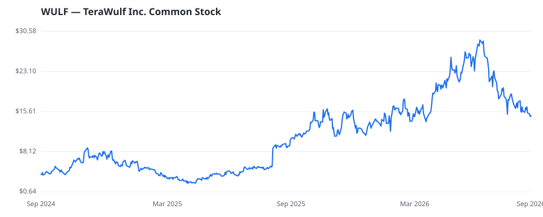

bullish · bearish · n/a — dots: price>SMA10 · SMA10>SMA50 · SMA50>SMA200 · up>down volume (20d)
Banks · mid cap

TeraWulf Inc develops and operates large-scale digital infrastructure designed for AI and high-performance computing workloads. The Company owns and operates energy infrastructure across key U.S. power markets, providing large-scale, contiguous power capacity for next-generation compute. Its strategic sites offer direct grid connectivity and, in select locations, integrated generation, creating a foundation for scalable compute infrastructure. Built on deep expertise in energy markets and grid integration, TeraWulf approaches compute infrastructure from the foundation up- securing power, devel FINANCE SERVICES · website
| Revenue | $168.5M | Net income | $-661.4M |
|---|---|---|---|
| Operating income | $-186.2M | Diluted EPS | $-1.66 |
| Assets | $6.6B | Equity | $140.4M |
🛒 Newly buying: Goodlander Investment Management, LLC (+67%, 3.4% of book) · TORNO CAPITAL, LLC (+28%, 0.0% of book)
| Fund | Fund alpha vs SPY | Position | % of book |
|---|---|---|---|
| Wasserstein Management, L.P. | +92% | $34M | 14.1% |
| Goodlander Investment Management, LLC | +67% | $11M | 3.4% |
| TORNO CAPITAL, LLC | +28% | $0M | 0.0% |
Hedge data: SEC EDGAR 13F · ranked funds beat SPY in >50% of their quarters · fund alpha = mirror-portfolio return minus SPY.